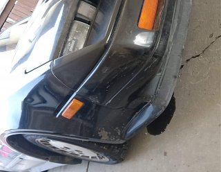
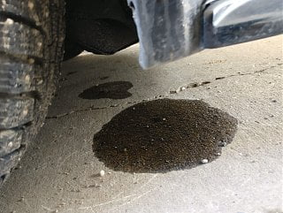
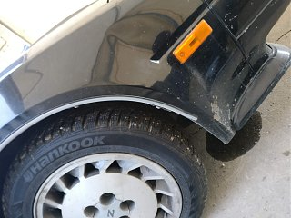

-
Hey guys I'm having a leak underneath the passenger side headlight. I'm not sure what it could be and haven't had a chance to actually get under the car. Its only been parked for like 4-5 days and I can see the puddle of fluid. I have attached a picture. Any ideas? Imma wait for the weather to warm up and get underneath as well!
Thank you!   -
Is it oil or something else? Auto turbo? I think those had oil coolers in the US and that's the spot where mine has an oil cooler. If it's not oil then coolant could be the next option, but it's a bit far from the tank or hoses. -
My guess would be either trans fluid from a leaking cooler or fluid from the power steering lines. The puddle has a red tinge to it. put your finger in it and see which fluid it smells like.
84 AE/Shiro #683/Shiro #820/84 Turbo -
You'll know if it's oil because it's thick and smells strongly. Power steering fluid has a very distinct smell to it. ATF is red or pink in color. Look down at the power steering pump with a flashlight and try to see if you see leaks or anything wet. The only way to know for sure is to get underneath the car and look. -
Thatâs how my 88T Auto leaks now. Comes from either the oil cooler or the one of the lines.Last edited by JSM; 01-21-2018, 07:40 PM. -
Yes its a 2+2 Auto Turbo (Canadian). I don't think its the coolant, coolant hasn't been topped up in a long time and its still full so might be the oil cooler. Ill look into that! What oil does the oil cooler cool? Engine oil or transmission?Originally posted by kaur View Post -
Is there a way to test and find out which is which? I know my power steering is a little tough to turn so not 100% sure, but at the same time if i recall I checked my transmission oil level a week back and it was well. I guess Ill have to check on the color of the fluid? Red is transmission oil, correct?Originally posted by Z_Karma View Post -
Okay will do! Thank you!Originally posted by daniel_pearce View Post -
Were you able to fix it? Just wanting to get an idea first, was it like a seal you had to fix, a bolt you had to tighten etc? I'm ew to this car and the car world aha I'm trying to figure out how to install a boost gauge so that should show how new I am ahahaOriginally posted by JSM View Post -
If it's trans fluid can be from either power steering or auto trans, since trans fluid used in power strg.
-
Hmmm. This raises a question. What's the best lubricant to use for our power steering systems? I've never had to change mine, but now may be a good time to ask. This may also benefit the OP if he has to add or replace his.Originally posted by Dunkine View Post
The FSM states using Automatic T/M and power steering lubricant Type DEXRON. However, our FSMs are outdated. DEXRON VI is the latest fluid specification, and is backward compatible with DEXRON III. However, I don't believe GM has officially verified it for power steering systems. The back of the bottle reads, "GM Vehicle applications not designed for DEXRON VI usage: Power Steering and manual transmissions…" See attached image.
IMG_0433.jpg
-
If you have the money…Redline.
From their website: https://www.redlineoil.com/
"RED LINE POWER STEERING FLUID satisfies the service fill requirements of most auto manufacturers and can be used where the manufacturer calls for any automatic transmission fluid such as Dexron®, Dexron II®, II-E®, or Dexron III®, Ford Type-F, Mercon, or M2C138-CJ such as required by Ford, AMC, Toyota, Nissan, Lexus, Infiniti, Jaguar, VW, Mercedes-Benz, BMW, SAAB, Subaru, Volvo, Porsche, Mitsubishi, Mazda, and many others."
Otherwise just buy Dexron III. Transmax by Castrol is under $20 on Amazon with Prime (right now, their prices go up and down) for a GALLON! -
Originally posted by areebashar.23 View Post
Honestly itâs not that much so I havenât really messed with it.

Copyright © 2006–. All rights reserved. Privacy Policy